Tokens the prototype is built on. Every value below is read from the prototype CSS, not redrawn.
Colour
Figma · Variables / Color
Dark theme only. The page is never pure black, and red is the only action colour: it marks focus, never decoration. Prototype root variables: :root{--bg:#0D0B0B;--tonal:#302C2C;--txt:#F7F5F5;--txt2:#C9C4C4;--mute:#918989;--red:#D7192D}
Background
bg-base#0D0B0BPage
bg-surface#181515Cards, panels
bg-elevated#242020Buttons at rest
bg-focused#302C2CTonal, selected pill
border#434141Hairline 2 px
Text
text-primary#F7F5F5Titles, focused labels
text-secondary#C9C4C4Body, rested labels
text-muted#918989Meta, disabled
Action and state
action-primary#D7192DFocus fill, focus ring
action-pressed#9F1021Pressed
on-air#2FBF71On air badge, live progress
toast#F7F5F5Toast pill, black text
Typography
Figma · Text styles
Inter with the Cyrillic subset. Sizes are for the 1920×1080 canvas; nothing a viewer has to read is smaller than 22 px.
Display600 52px/56pxSeries title · 1
Section title600 40px/48pxRecently added
Card title600 32px/40pxTNT comedy series
Button500 28px/32pxContinue watching
Body400 28px/40pxEverything you start watching will appear here.
Meta400 22px/26pxSeason 1 · Episode 4
Badge500 24px/28pxNew
Shape
Figma · Variables / Radius
Radius grows with the size of the element.
Badge8px
Tile16px
Card16px
Focus ring28px
Button, chip40px
Focus
Figma · Focus Ring
One focus ring for the whole app. It is a single element that travels between items, so the eye follows one shape instead of watching items light up. 4 px red border, 8 px from the item, radius of the item plus 12.
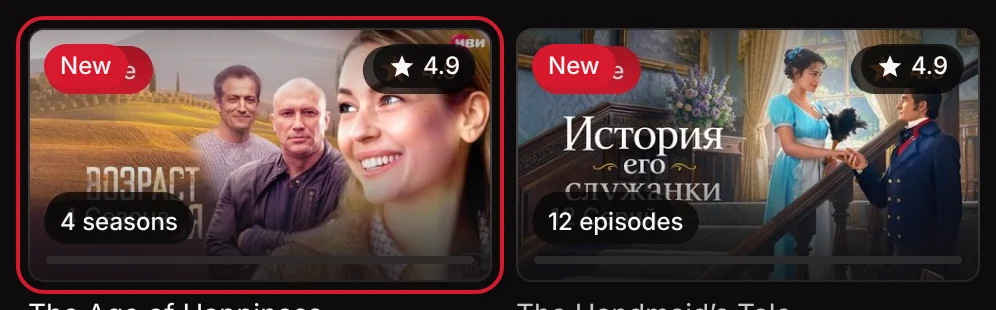
On a cardRing around the card; the art scales to 1.05.
Few durations, used everywhere. Only transform and opacity animate, which keeps low-end TVs smooth.
Token
Duration
Easing
Used for
Focus move
340 ms
cubic-bezier(.25,.8,.25,1)
Ring and card scale
Fast
200 ms
linear
Fills, colours, labels
Menu open
280 ms
cubic-bezier(.2,.8,.2,1)
Menu expands
Menu close
200 ms
cubic-bezier(.4,0,1,1)
Menu collapses
Fade out / in
120 / 200 ms
linear
Grid swap on chip change
Toast
3 s
—
Time on screen
Navigation
How the viewer moves around the app with a D-pad: the side menu, the header, category chips and the page indicator.
Menu
Figma · Menu · Menu Item
The side menu is the root of every main screen. It has three widths: open (focus is inside the menu), labelled (the page is a top-level list) and collapsed to icons (inside a title page or a category). The pill under an item marks where the viewer is; the red pill marks where the focus is.
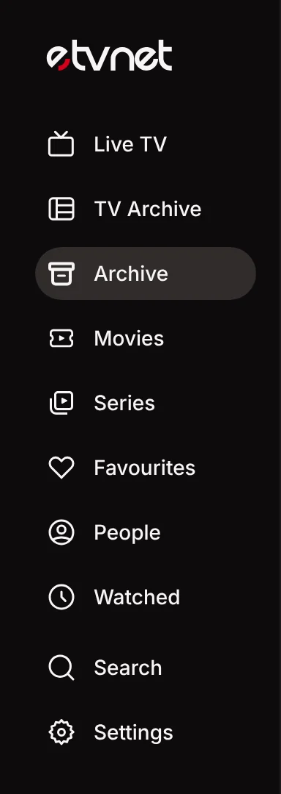
Rested · labelledFocus is on the page. The current section (Archive) keeps a dark grey pill.
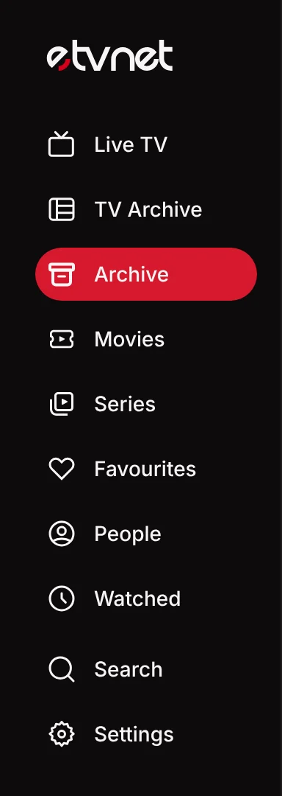
FocusedLeft from the page opens focus in the menu. The focused item fills red.
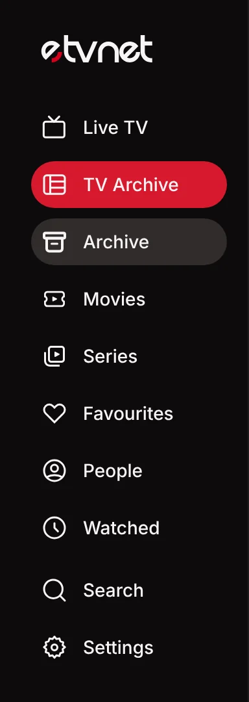
Focused · movedUp and down move the red pill. The grey pill stays on the current section until Enter.
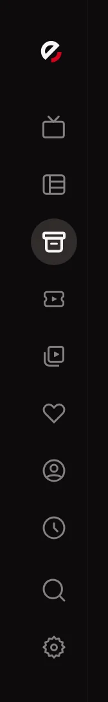
CollapsedOn title pages and categories the menu shrinks to icons to free the screen.
Collapsed → focusedLeft from a collapsed page expands the menu again with labels.
Every screen starts with the same header: where you are on the left and the date, city and time on the right. Inside a section the breadcrumb gets a back chip.
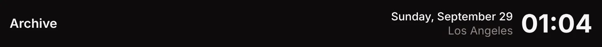
Top levelSection name only.
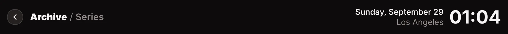
NestedBack chip + path. Back on the remote returns one level up.
A horizontal row of filters above a grid. The selected chip keeps a light pill; when the row has focus the chip under focus fills red. Other chips dim while the viewer is in the row.
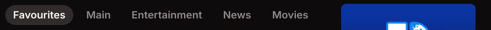
RestedFocus is in the grid. The selected category keeps a light pill.
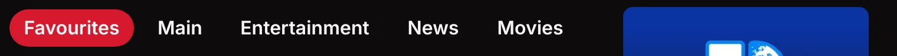
FocusedFocus is in the row; Left/Right switch the category and the grid reloads.
The main content card. Badges are live: New, rating, a duration or seasons count. The progress bar appears only for titles the viewer has started. The tag on the card tells the type of page it opens (movie, series or show).
New + ratingRecently added titles carry a red New badge. Focused card has the ring.
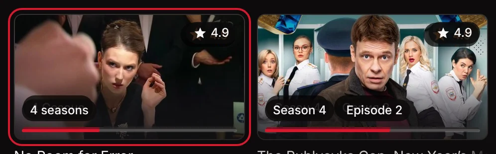
In progressStarted titles show a red progress bar and the season and episode.
Alternative Live TV layout: one row per channel with the current show and progress. The focused row shows an arrow button that opens the channel TV guide.
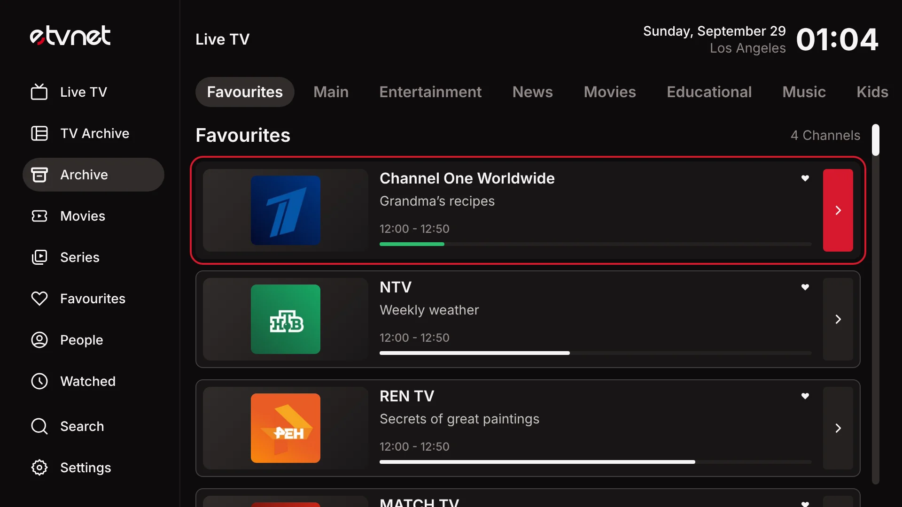
Focused rowRing on the row; the red arrow on the right opens the guide.
Player
Controls over live and archive video. Controls appear on any key and hide after a few seconds.
Player header
Figma · Player Top Bar
Channel logo, channel name and the show, with the clock on the right. Sits on a dark gradient so it reads over any picture.
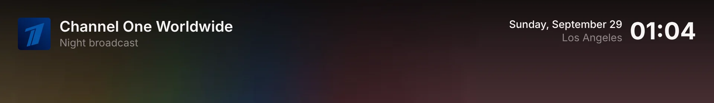
DefaultVisible together with the controls.
Player controls
Figma · Player Controls · Player Button
Timeline with time, then three groups: TV guide on the left, playback in the centre, server, favourites and Live TV on the right. The focused button fills red and shows its name under it.
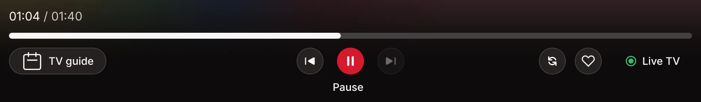
Pause focusedDefault focus when controls open.
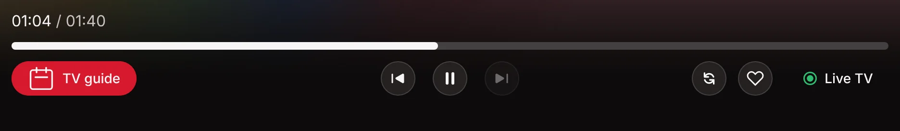
TV guide focusedPill button with a label inside.
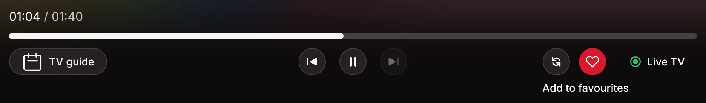
Favourites focusedRound button; the label appears under it.
Down from the controls opens the other channels. Numbers for empty slots, logos for channels, On air marker on the current one.
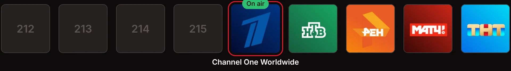
Focused channelRing and name under the focused channel.
TV guide
Figma · TV Guide
Opened from the player. Days on the left, the day schedule on the right. Past shows play from the archive, the current show is marked On air, future shows are not available yet.
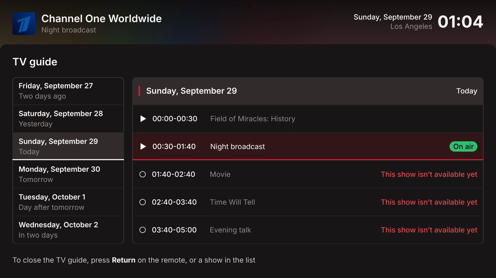
TodayToday selected, current show highlighted.
Title page
The page for a movie, series or show: description, actions and related rows.
Title header
Figma · Content Hero
Title, seasons count, rating, year, country, genre and a description cut after four lines. The full text opens from Full description.
Three rows. The top row holds icon buttons that expand with a label when focused, so only one label is wide at a time. The red fill always follows the focus.
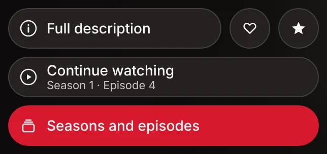
Seasons focused (default)Default focus on a series page.
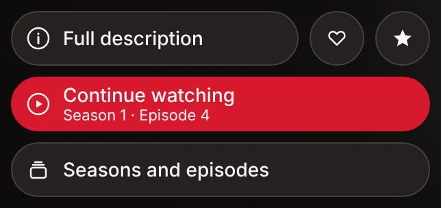
Continue watching focusedSecond line shows the episode to continue.
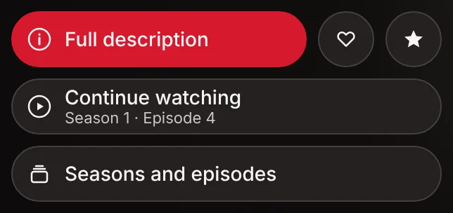
Full description focusedIcon buttons on the right stay round.
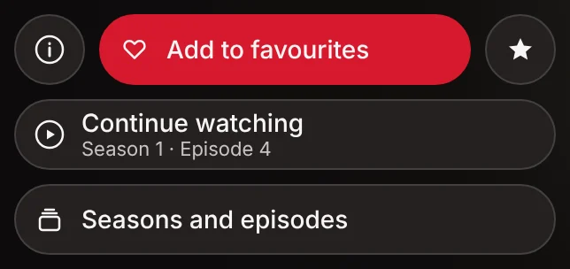
Add to favourites focusedFull description collapses to an icon; the heart button expands.
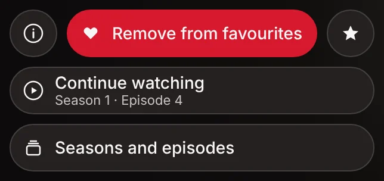
In favouritesAfter Enter the heart fills and the label switches to Remove from favourites. A toast confirms.
The full description in a scrollable panel over the dimmed page. Close returns focus to Full description.
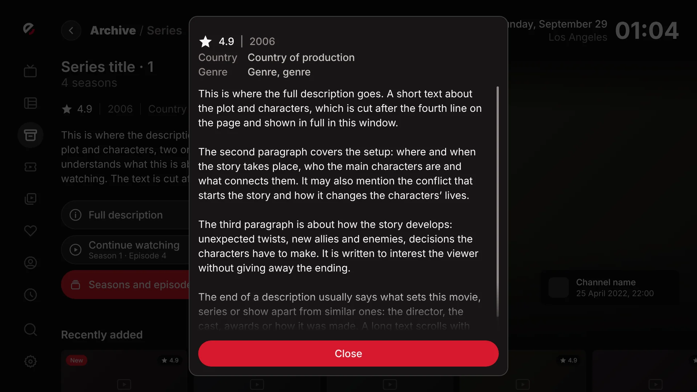
OpenUp/Down scroll the text; Back or Close dismiss.
Rating dialog
Figma · Rate Modal
Five stars, Left/Right set the score, Rate saves it.
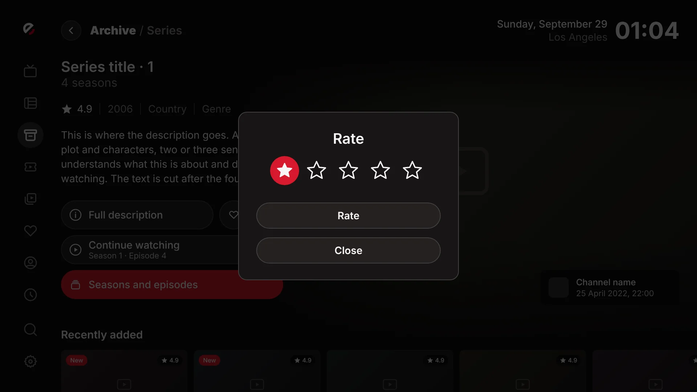
OpenFirst star focused.
Quick actions
Figma · Quick Actions
Long press of Enter on any card opens a short menu next to it. The actions depend on the item: titles get Start watching and Add to favourites, channels get Start watching, TV guide and favourites.
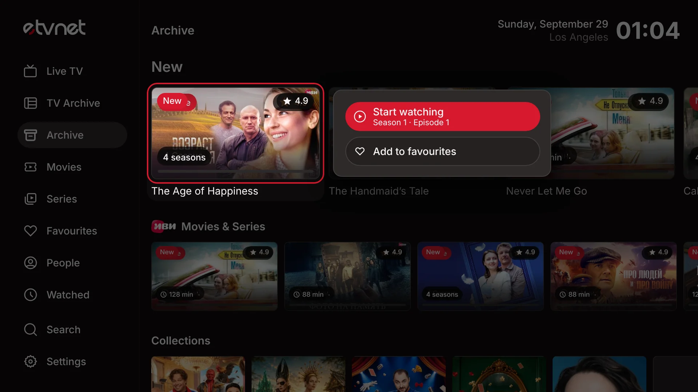
On a posterMenu opens to the right of the card.
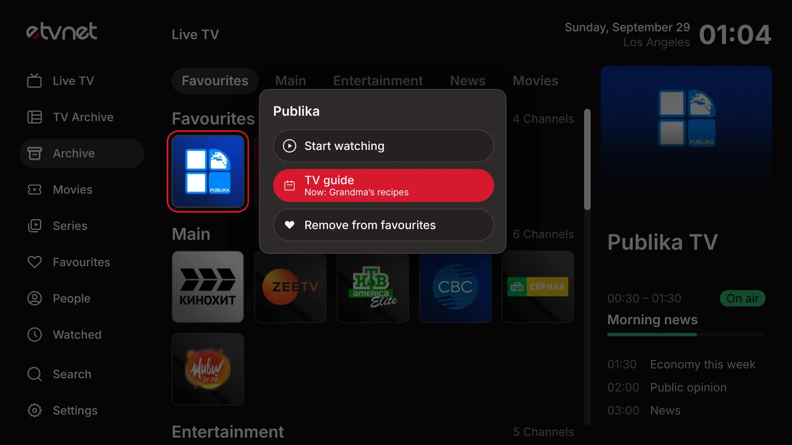
On a channelTV guide shows what is on now.
Settings
One list on the left, the options of the selected item on the right. Options apply immediately; there is no Save button.
Settings list
Figma · Settings Menu
Items grouped under Live TV, Archive, Interface and Account. The focused item fills red.
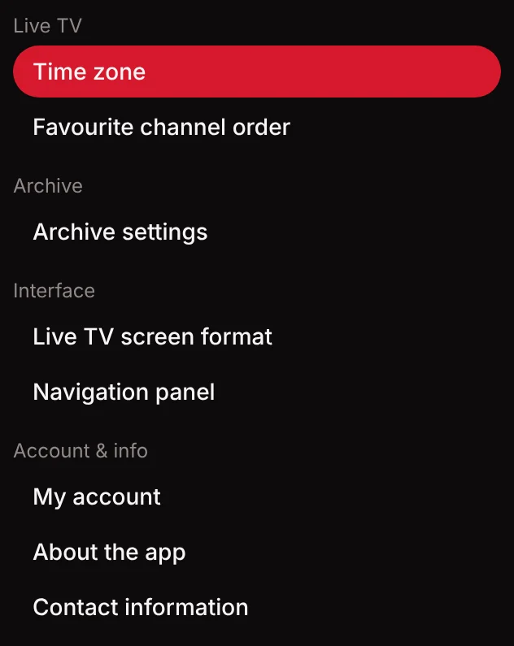
Time zone focusedGroup titles are not focusable.
Code from the prototype
<div class="sitem on">
Time zone
</div>
<div class="sitem">
Favourite channel order
</div>
How the app answers the viewer: toasts, empty screens and loading.
Toast
Figma · Toast
Light pill with black text, no icon, shown for 3 seconds. At the bottom on regular screens and at the top in the player, so it does not cover the controls. If the same action repeats while the toast is on screen, the toast nudges instead of appearing again.
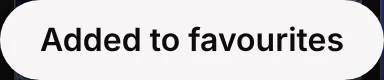
BottomAdded to favourites.Top · playerServer changed.
Code from the prototype
<div class="toast tv-a show" id="toast">
Added to favourites
</div>
Icon, what is missing, how to fill it, and one button that leads there.
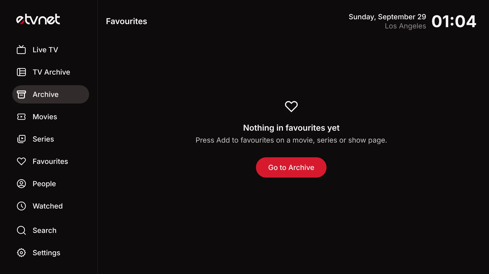
FavouritesGo to Archive.
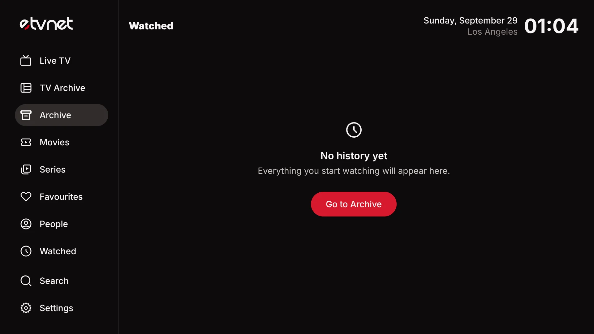
WatchedGo to Archive.
Search states
Figma · Search
Suggestions appear after two letters. While results load, the grid shows skeleton cards of the final size so nothing jumps.
SuggestionsMatching part in bold.LoadingSkeleton cards.
Screens
The components above, assembled. Captured from the live prototype.
Main screens
Figma · Screens
Each screenshot is the prototype in its default state.
SearchKeyboard, suggestions and popular titles.PeopleA–Z index, role filter and person grid.FavouritesType filter and poster grid.WatchedGrouped by day.TV ArchiveChannel list and the channel preview.CategoryGenre chips, filters, grid and pager.